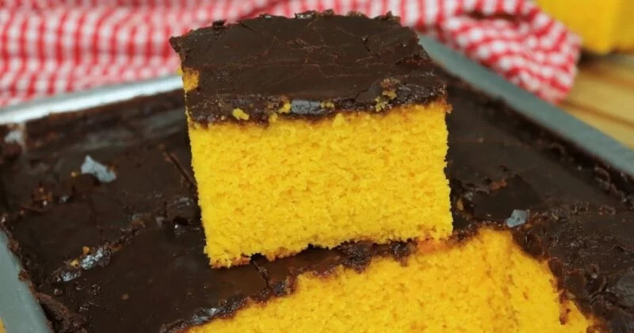

Brazilian Carrot Cake

Description
Easy to make! This traditional Brazilian Carrot Cake recipe is a great alternative for the traditional carrot cake. A fluffy cake coated with a thin layer of chocolate topping.
Ingredients
Cake Batter
- 1 and 1/2 cups white sugar
- 4 eggs
- 1 cup vegetable oil
- 3 carrots, quartered, about 360 grams
- 2 cups all-purpose flour
- 1 tablespoon baking powder
Chocolate Crust
- 1/2 cup white sugar
- 1/4 cup cocoa powder
- 1/3 cup water
- 1 tablespoon butter
Steps
- Preheat oven to 350 degrees F (175 degrees C). Grease a 10-inch cake pan and dust with flour.
- Combine 1 and a half cups sugar, eggs, vegetable oil, and carrots in a blender; blend until very smooth, about 5 minutes.
- In a bowl, add flour and baking powder, mix to combine. Pour over carrot wet mixture, mix well to combine. Pour into the prepared cake pan.
- Bake in the preheated oven until a toothpick inserted into the center comes out clean, about 45 minutes. Cool in the pan for 15 minutes. Invert onto a wire rack to cool.
- Combine 1/2 cup sugar, cocoa powder, water, and butter in a small saucepan over low heat. Cook, stirring constantly, until sauce begins to bubble and thicken, 3 to 4 minutes. Remove from heat and quickly spread while hot over cake.